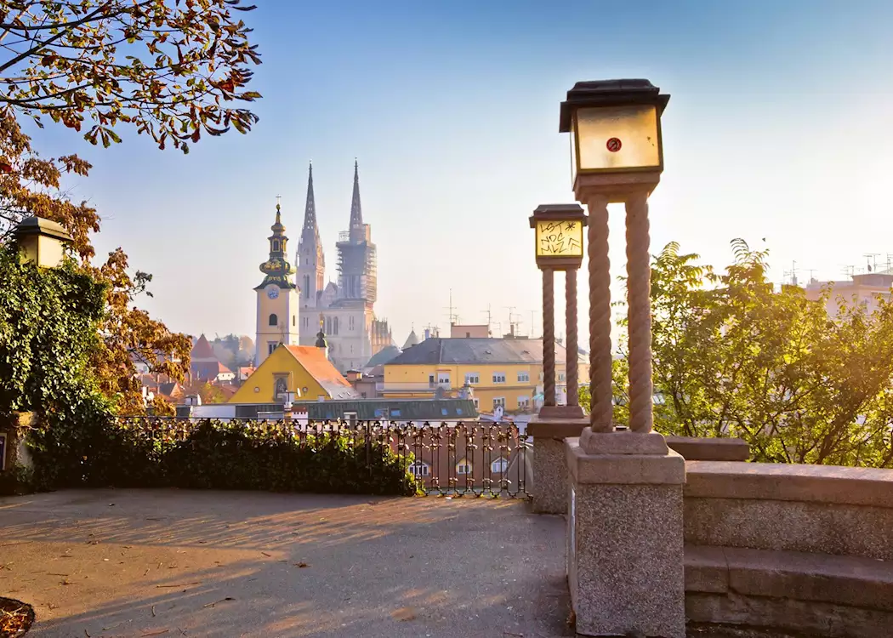

ВИКЕНД ПОНУДА

ВИКЕНД ВО ЗАГРЕБ
Загреб, Хрватска
01.12 - 03.12
Откријте го шармантниот Загреб и уживајте во совршен викенд исполнет со историја, култура и пријатна градска атмосфера. Прошетајте низ Горниот град, откријте ги прекрасните плоштади и уживајте во традиционалната хрватска кујна. Загреб е идеална дестинација за краток и незаборавен одмор.
ХРВАТСКА АВАНТУРА
Главниот град на Хрватска и еден од најшармантните градови во регионот, познат по својата богата историја, австриско-унгарската архитектура и живописната градска атмосфера. Во центарот на Загреб се издвојува плоштадот Бан Јелачиќ, Загрепската катедрала посветена на Успението на Пресвета Богородица, додека улицата Ткалчиќева е позната по бројните кафулиња и ресторани.
Прошетка низ Горен град, најстариот и најживописен дел на Загреб, исполнет со тесни историски улици и значајни градби. Посебно се издвојува црквата Свети Марко со препознатливиот шарен покрив, како и Камената порта и Тунелот Гриќ, кои се дел од богатото историско наследство на градот.
Состанок со групата на автобуска станица во Скопје, 30 минути пред поаѓање. Поаѓање со организиран автобуски превоз кон Загреб. По пристигнувањето следува организирана прошетка низ центарот на градот. Посета на плоштадот Бан Јелачиќ, главното собиралиште во Загреб, и прошетка низ околните пешачки улици. Потоа следува прошетка по улицата Ткалчиќева, позната по своите кафулиња, ресторани и пријатна градска атмосфера. Предвидено е слободно време за ручек, кафе и индивидуално разгледување. Попладнето следува сместување во хотел и време за одмор. Во вечерните часови е предвидена слободна прошетка низ центарот и можност за вечера во еден од локалните ресторани. Ноќевање во хотел.
Појадок во хотелот и организирано разгледување на Горен град. Следува прошетка низ историските улици и посета на црквата Свети Марко, позната по препознатливиот шарен покрив. Потоа следува прошетка низ Камената порта и околината на Горен град. Предвидено е време за фотографирање и разгледување. Во продолжение следува посета на Тунелот Гриќ, доколку е отворен за посетители во времето на турата. Потоа следува слободно време за ручек и одмор. Во попладневните часови следува прошетка низ централниот дел на Загреб и слободно време за шопинг, кафе и индивидуални активности. Вечерта е слободна за вечера и одмор. Ноќевање во хотел.
Појадок во хотелот и одјавување согласно предвиденото време. Следува утринска прошетка до Загрепската катедрала и разгледување на нејзината околина. Потоа следува последна прошетка низ центарот и слободно време за кафе, ручек или последен шопинг. Пред поаѓањето е предвидено слободно време на плоштадот Бан Јелачиќ за последни фотографии и индивидуално разгледување. Во попладневните часови следува собирање на групата и организирано поаѓање со автобус кон Скопје. По пристигнувањето и преземањето на багажот завршува организираното патување.